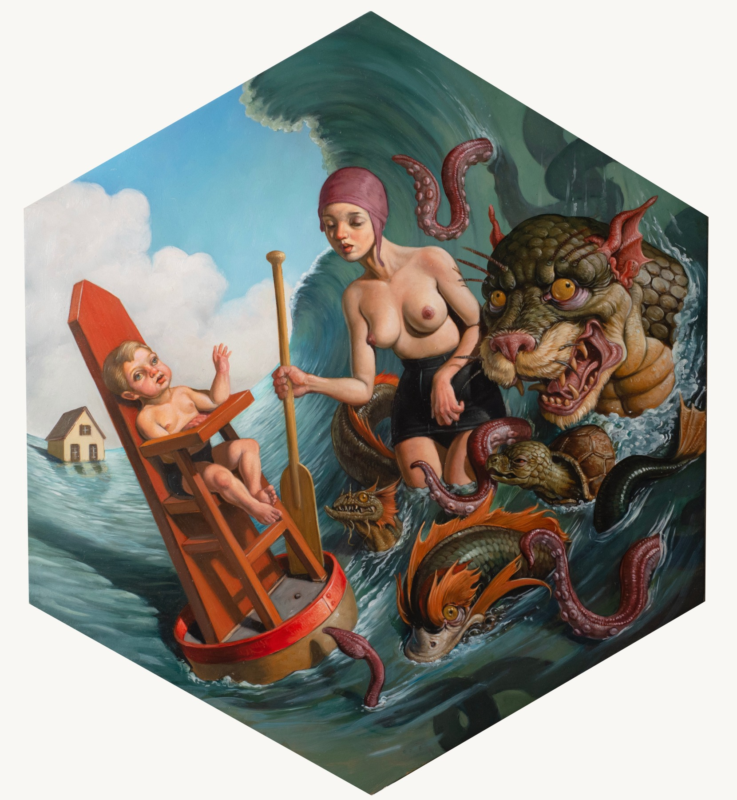

A CONNERSMITH tem o prazer de anunciar uma exposição de novas pinturas do surrealista americano Erik Thor Sandberg. Em seu último corpus, STRANGE ATTRACTORS, Sandberg apresenta visões únicas de indivíduos e sociedades como esferas complexas girando no espaço. Formas humanas e animais entrelaçadas habitam esses mundos distintos, embutidos em vários elementos coerentes de osso, água, terra e madeira. Dentro de cada sistema, o artista constrói narrativas em torno de membros díspares que funcionam como um organismo singular. Algumas figuras exalam uma sensação de estabilidade, paz ou triunfo. Outros, em desacordo com suas circunstâncias, movem-se em direções divergentes, lutando para redirecionar as construções giratórias ou destruir as barreiras que as separam.
"Cada uma dessas pinturas existe como seu próprio mundo. O cenário é propositalmente nebuloso para sugerir um ambiente fechado sem fatores externos além da luz e da gravidade. As figuras vivem isoladas, como em planetas separados. Mas o que acontece se eles interagirem?" - ERIK THOR SANBERG"
Erik Thor Sandberg

John Stark
"A Marcha dos Demônios para a Cidade", de John Stark. Os demônios vívidos na pintura panorâmica de Stark correspondem a forças naturais dentro de um modelo subversivo de história cultural.
Inspirado por teorias antropológicas, o artista concebe a fundação da civilização como "a marcha dos demônios para a cidade". A procissão de demônios de Stark representa a tradução de invenções técnicas, informadas pela natureza, de aldeias periféricas para centros urbanos. Essas tecnologias civilizatórias incluem fabricação de cerveja, metalurgia e medicina, que foram desenvolvidas discretamente, ao longo de muitos séculos, principalmente por mulheres que viviam em aldeias.
John Stark
"A Marcha dos Demônios para a Cidade", de John Stark. Os demônios vívidos na pintura panorâmica de Stark correspondem a forças naturais dentro de um modelo subversivo de história cultural.
Inspirado por teorias antropológicas, o artista concebe a fundação da civilização como "a marcha dos demônios para a cidade". A procissão de demônios de Stark representa a tradução de invenções técnicas, informadas pela natureza, de aldeias periféricas para centros urbanos. Essas tecnologias civilizatórias incluem fabricação de cerveja, metalurgia e medicina, que foram desenvolvidas discretamente, ao longo de muitos séculos, principalmente por mulheres que viviam em aldeias.